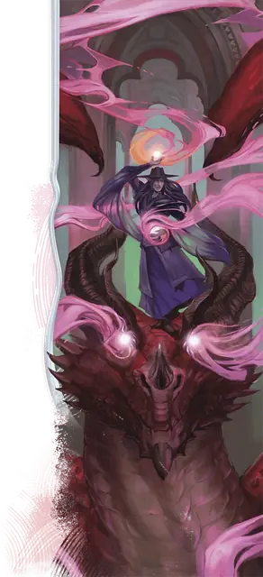

Иллюзорный дракон
Illusory Dragon
8 уровень, Иллюзия

Время сотворения Действие
Дистанция 120 футов
Компоненты С
Длительность Концентрация, вплоть до 1 минуты
Классы Волшебник
Вы сплетаете нити теневой материи из Царства Теней и создаёте призрачного дракона Огромного размера в видимом вами в пределах дистанции незанятом пространстве. Иллюзия существует в течение длительности заклинания и занимает пространство так, будто является существом. Иллюзия осязаема из-за использованной для её создания теневой материи, но обладает Иммунитетом ко всему урону и состояниям.
Когда иллюзия появляется, любой способный видеть её враг должен совершить спасбросок Мудрости. При провале существо роняет всё, что несёт, и получает состояние Испуганный на время действия заклинания. Если Испуганное таким образом существо оканчивает свой ход в пространстве, откуда у него нет линии видимости до иллюзии, оно повторяет спасбросок, при успехе оканчивая на себе это состояние.
Бонусным действием вы можете переместить иллюзию на расстояние вплоть до 60 футов. В любой точке этого перемещения вы можете заставить призрачного дракона выдохнуть волну энергии в 60-футовом Конусе. Все существа в этом Конусе должны совершить спасбросок Интеллекта, получая 6к6 Некротического урона или урона Кислотой, Огнём, Холодом, Электричеством или Ядом (выберите при создании дракона) при провале или половину этого урона при успехе.
Существо может действием Изучение осмотреть дракона и совершить проверку Интеллекта (Расследование) против Сл спасброска ваших заклинаний, чтобы распознать иллюзию. Если существо распознаёт иллюзию, оно может видеть сквозь образ дракона и совершает с Преимуществом спасброски для окончания состояния Испуганный этого заклинания и для избежания урона от выдоха.